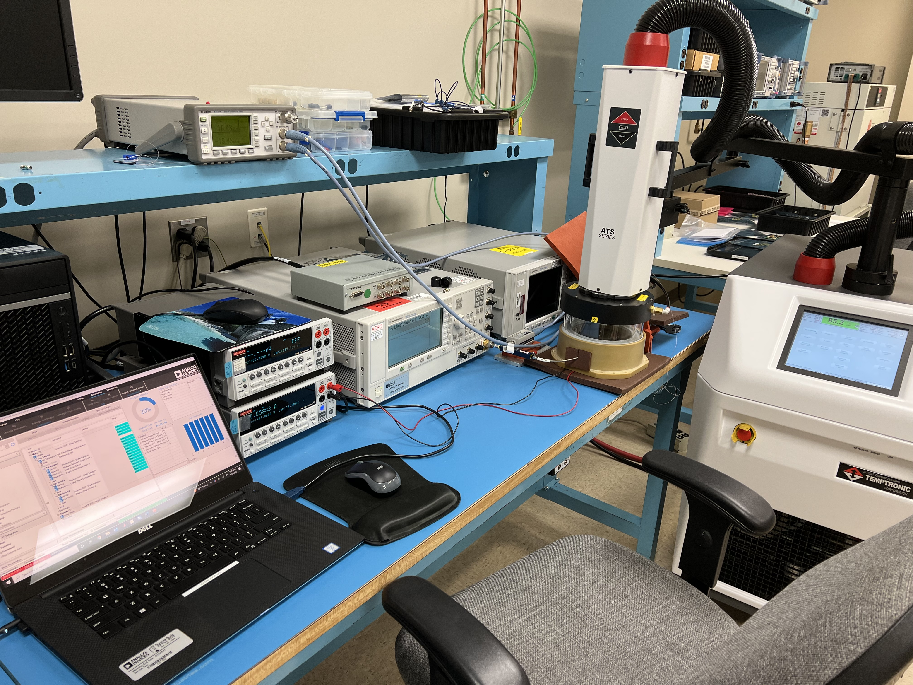
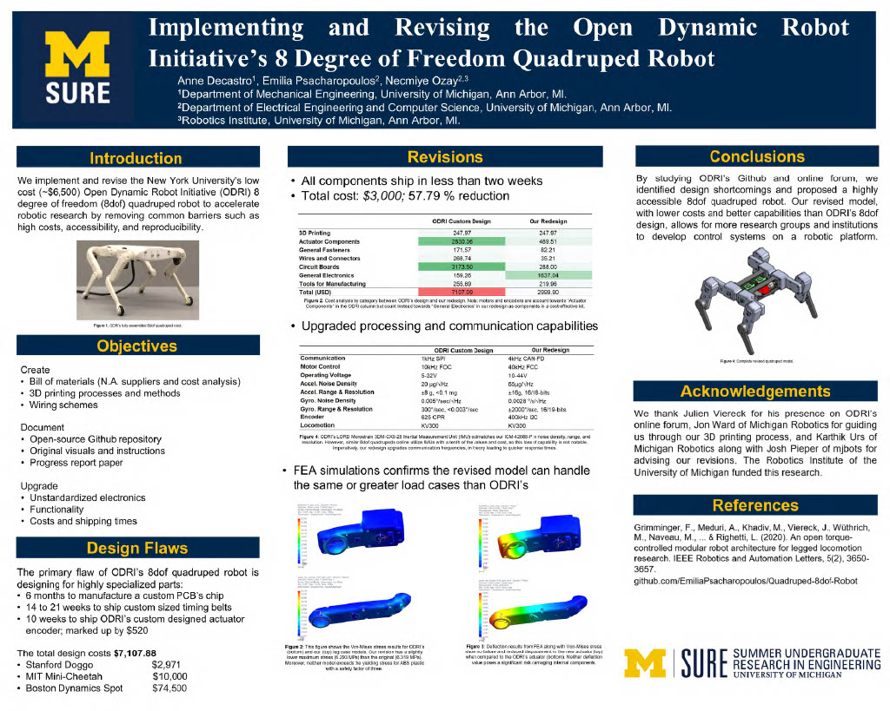
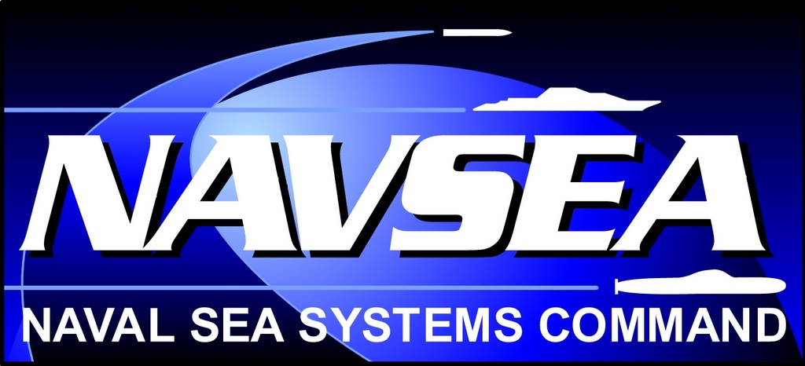

WORK EXPERIENCE
Analog Devices, Inc. • Product/ Test Engineering Intern • Summer 2022
As part of ADI's Aerospace and Defense team, I automated the Radio Frequency (RF) characterization measurement process for the company's new chips. Analog Devices, Inc. (ADI) provides industry-leading integrated circuits (ICs) to top satellite communications companies, including Starlink and Blue Origin. This role not only immersed me in RF test engineering but also exposed me to the cutting-edge technologies driving the 5G revolution.
My primary responsibility was to standardize RF characterization data collection on a single, robust platform: Zero Code GUI (ZCG) by Soliton Technologies. After completing LabVIEW Core 1 and 2 training, I developed graphical user interfaces (GUIs) using National Instruments LabVIEW scripts to automate RF characterization data collection across various ADI technologies. For instance, I created a GUI to measure 2nd and 3rd order two-tone intermodulations using two signal generators. Additionally, I authored a ZCG tutorial guide to encourage other ADI RF testing teams to adopt the platform and suggested weekly user interface (UI) improvements to the ZCG development team. My work demonstrated the efficiency gained through automation and will facilitate the characterization of even more ADI technologies.
Beyond my primary assignment, I developed MATLAB programs to enhance ADI’s data processing capabilities for test results analysis. One program generated radiation performance reports by parsing large datasets to produce tables of key statistics. Another parser sifted through thousands of raw data files, compiling essential spreadsheets and hundreds of plots for the design team. These automation efforts have significantly reduced the senior engineering team's workload and cumulatively saved them days or even months of effort. My comprehensive MATLAB documentation will support the team in tackling similar data parsing projects in the future.
University of Michigan • Robotics Research Engineering Intern • Summer 2021
I collaborated with an interdisciplinary team of graduates and undergraduates on the Open Dynamic Robot Initiative (ODRI), which aims to develop a low-cost, open-source quadruped robot as a platform for researchers worldwide to create innovative control systems. Traditionally, robotics has had a high barrier to entry due to educational and financial constraints. Our advanced 3D-printed robots, equipped with numerous degrees of freedom, enhanced sensing capabilities, and robust online support, offer significant opportunities to expand the field globally.
Our primary research objective was to implement and refine ODRI’s quadruped robot. I enhanced the technical documentation by conducting a statistical cost analysis, creating detailed wiring schematics, assembling circuit tutorials, and compiling an original bill of materials on GitHub to track our research progress for other collaborators. Additionally, I led the redesign of the robot’s electrical components, circuitry, computing, communication, and motor control systems. By replacing ODRI’s highly specialized PCBs with generic control platforms, we quadrupled the communication capabilities and motor control bandwidth while reducing costs by over 91%. We documented our mechanical and electrical redesigns in a research paper and presented our findings at Michigan’s Summer Undergraduate Research in Engineering (SURE) symposium.
NAVSEA • Engineering Technician Intern • Summer 2020
I compiled and synthesized hundreds of testing documents into executive summaries that conveyed key Lessons Learned to Navy leadership in the Unmanned Maritime Systems Program Office (PMS 406). Additionally, I collaborated with senior engineers to organize a multi-day leadership conference for Unmanned Undersea Vehicle (UUV) Homeport program managers. My communication and documentation skills were recognized as exceptional by the Strategic Capabilities Office (SCO).
The George Washington University • Engineering Intern • Summer 2018
I assisted mechanical engineering PhD students in researching hydrophobic aluminum treatment methods to prevent cracking in the hulls of container ships bound for arctic regions.